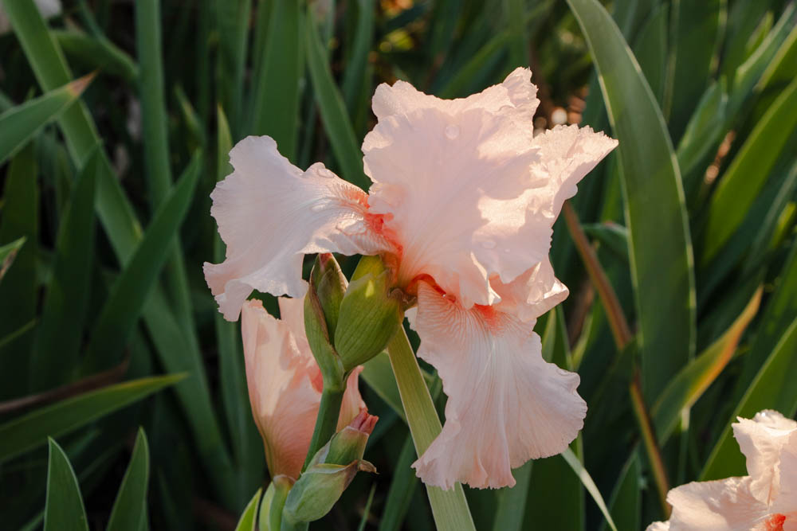

Who I Am
I am a graphic designer and creative student interested in meaningful visual communication, storytelling, and creating work that explores themes of growth, resilience, and environmental awareness.
My work combines creativity, personal expression, and thoughtful design choices to communicate ideas in a clear and engaging way.
Creative Inspiration

I draw inspiration from nature, emotion, and personal growth. These influences help shape the visual style and meaning behind my design work.